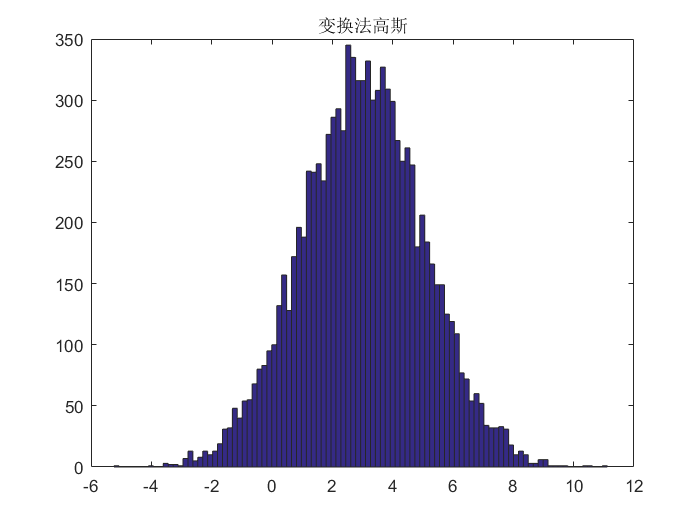

task1_2
Contents
配置环境
clear all; close all; clc;
产生高斯随机变量
m=3; a=2; num=10000; s=rnd1(m,a,num); y=rnd2(m,a,num);
画线和画点
画线
figure,subplot(2,1,1),plot(s); title('中心极限全部数据连线'); % 画点 subplot(2,1,2),plot(s,'.'); title('中心极限全部数据画点'); % 画线 figure,subplot(2,1,1),plot(y); title('变换法全部数据连线'); % 画点 subplot(2,1,2),plot(y,'.'); title('变换法全部数据画点');

统计量
n=zeros(1,4); for i=1:10000 n(1)=n(1)+s(i); n(2)=n(2)+s(i)^2; n(3)=n(3)+s(i)^3; n(4)=n(4)+s(i)^4; end n=n/10000; m=zeros(1,4); for i=1:10000 m(1)=m(1)+y(i); m(2)=m(2)+y(i)^2; m(3)=m(3)+y(i)^3; m(4)=m(4)+y(i)^4; end m=m/10000; Max=max(s);disp(['自编最大值',num2str(Max),'。']); Min=min(s);disp(['自编最小值',num2str(Min),'。']); Max1=max(y);disp(['对照最大值',num2str(Max1),'。']); Min1=min(y);disp(['对照最小值',num2str(Min1),'。']); [zxg1,n1]=xcorr(s,'coeff'); [zxg2,n2]=xcorr(y,'coeff'); figure,subplot(2,1,1),plot(n1,zxg1); title('中心极限高斯相关'); subplot(2,1,2),plot(n2,zxg2); title('变换法高斯相关');
自编最大值10.3253。 自编最小值-3.562。 对照最大值11.1127。 对照最小值-5.239。